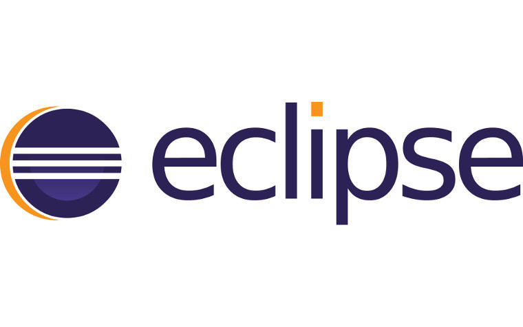

Project idea
Overview
For my project idea, I decided to develop a smartphone app called "Restaurant snapshot". I'm proposing an app that provides a digital preview of the restaurant menu. It will allow the user to see pictures of the dishes, reviews created by other users on the platform, as well as store their favourite orders into their record, and share it with friends. This record will serve as your experience snapshot and you can reference it any time you want. Restaurants can even offer reward points and discounts for users who leave reviews and share their experiences.
Motivation
I was motivated to pursue this project because I personally enjoy eating out a lot due to my current circumstances of university and work. According to an article titled "EatingOutInAustralia" published by The Intermedia Group Pty Ltd in 2017 states that "there are just over 24 million Australians, [that] eat out an average of two to three times a week". This app would create a platform for foodies like myself to easily access and browse the restaurant's menu in the palm of your hand.
Description
Nowadays, technology has become an important aspect of our daily life. Technology is constantly shifting and improving their applications as human civilization gradually diverge into a digital era. My app serves for a way of convenience for food users in the future who want to visually view the menu before ordering at their desired restaurant. My app centered around a QR scanner, where the user scans a barcode at the front window or on the menu of the restaurant. After they scan the code, the app will direct the user to the restaurant page displaying a slideshow presentation of the dishes and drinks offered at the selected restaurant. Underneath each dish contains a short description of the cuisine. The user can also click on their desired dish to read more in-depth about the meal as well as read other user's reviews and star-ratings. All the restaurants that decide to join the platform will offer coupons or reward points for active users who leave behind reviews as well as by sharing their favourite dish/restaurant with their friends. The application will have a built-in database to store all the frequent users. The user is invited to sign up through connecting to their social media or email, but they are allowed to sign up at a later time. Creating an account includes a range of perks from special deals from different restaurants to storing their favourite dishes or restaurants. The user can also customise their profile by adding their own background and display picture. The platform will also serve as a type of dish-review system as users will be rewarded with special badges for their contribution to the application. The app user interface will consist of two main pages and QR scanner in the centre. The first page will be titled "Near Me", which will display a full selection of colourful cuisine near you, highlighting restaurants that your friends have highly recommended as well as showcasing new and upcoming restaurants in the area. The page will also include a gallery of photos for each location unveiling (what the place looks like) and their dishes. The last page will be profile where you can browse through your bookmarks and My application will be simple and smooth for the user to navigate.
Tools and Technologies
I have no previous experience in designing an app, but I would most likely use an useful range of software tools such as MIT App Inventor or Xcode or Shoutem. As an Apple user, I would use Xcode to layout the app user interface as it seems like a simple and transparent platform for beginners like me who are trying to build their first application. For the coding section, I would use java program such as Eclipse to write my code as I am currently using the program in my course.
Tools

Tools Required & Outcome
Although, I think designing an app requires a broad scope of technical skills and an intermediate level of coding knowledge, anyone can easily learn how to develop an app with the power of internet. The basic process of creating an app is to firstly write a source code as it is the foundation of the application. The second stage is to plan out and brainstorm ideas for the user interface of the app as appearance has to be aesthetically pleasing and neat. Nowadays, all the necessary software and tutorials to build an app is very easily accessible through the web.
 Fringilla nisl. Donec accumsan interdum nisi, quis tincidunt felis sagittis eget. tempus euismod. Vestibulum ante ipsum primis in faucibus vestibulum. Blandit adipiscing eu felis iaculis volutpat ac adipiscing accumsan eu faucibus. Integer ac pellentesque praesent tincidunt felis sagittis eget. tempus euismod. Vestibulum ante ipsum primis in faucibus vestibulum. Blandit adipiscing eu felis iaculis volutpat ac adipiscing accumsan eu faucibus. Integer ac pellentesque praesent. Donec accumsan interdum nisi, quis tincidunt felis sagittis eget. tempus euismod. Vestibulum ante ipsum primis in faucibus vestibulum. Blandit adipiscing eu felis iaculis volutpat ac adipiscing accumsan eu faucibus. Integer ac pellentesque praesent tincidunt felis sagittis eget. tempus euismod. Vestibulum ante ipsum primis in faucibus vestibulum. Blandit adipiscing eu felis iaculis volutpat ac adipiscing accumsan eu faucibus. Integer ac pellentesque praesent. Blandit adipiscing eu felis iaculis volutpat ac adipiscing accumsan eu faucibus. Integer ac pellentesque praesent tincidunt felis sagittis eget. tempus euismod. Vestibulum ante ipsum primis in faucibus vestibulum. Blandit adipiscing eu felis iaculis volutpat ac adipiscing accumsan eu faucibus. Integer ac pellentesque praesent.
Fringilla nisl. Donec accumsan interdum nisi, quis tincidunt felis sagittis eget. tempus euismod. Vestibulum ante ipsum primis in faucibus vestibulum. Blandit adipiscing eu felis iaculis volutpat ac adipiscing accumsan eu faucibus. Integer ac pellentesque praesent tincidunt felis sagittis eget. tempus euismod. Vestibulum ante ipsum primis in faucibus vestibulum. Blandit adipiscing eu felis iaculis volutpat ac adipiscing accumsan eu faucibus. Integer ac pellentesque praesent. Donec accumsan interdum nisi, quis tincidunt felis sagittis eget. tempus euismod. Vestibulum ante ipsum primis in faucibus vestibulum. Blandit adipiscing eu felis iaculis volutpat ac adipiscing accumsan eu faucibus. Integer ac pellentesque praesent tincidunt felis sagittis eget. tempus euismod. Vestibulum ante ipsum primis in faucibus vestibulum. Blandit adipiscing eu felis iaculis volutpat ac adipiscing accumsan eu faucibus. Integer ac pellentesque praesent. Blandit adipiscing eu felis iaculis volutpat ac adipiscing accumsan eu faucibus. Integer ac pellentesque praesent tincidunt felis sagittis eget. tempus euismod. Vestibulum ante ipsum primis in faucibus vestibulum. Blandit adipiscing eu felis iaculis volutpat ac adipiscing accumsan eu faucibus. Integer ac pellentesque praesent.